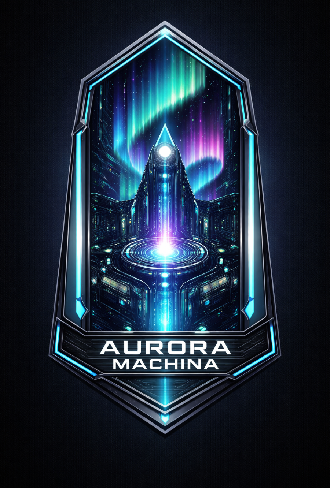
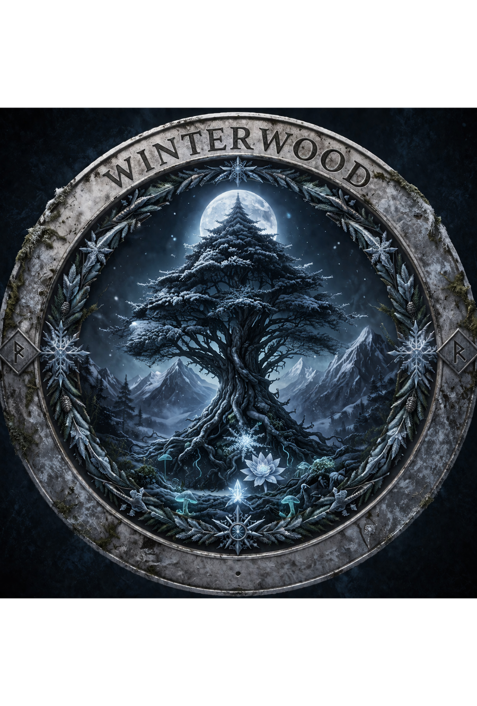
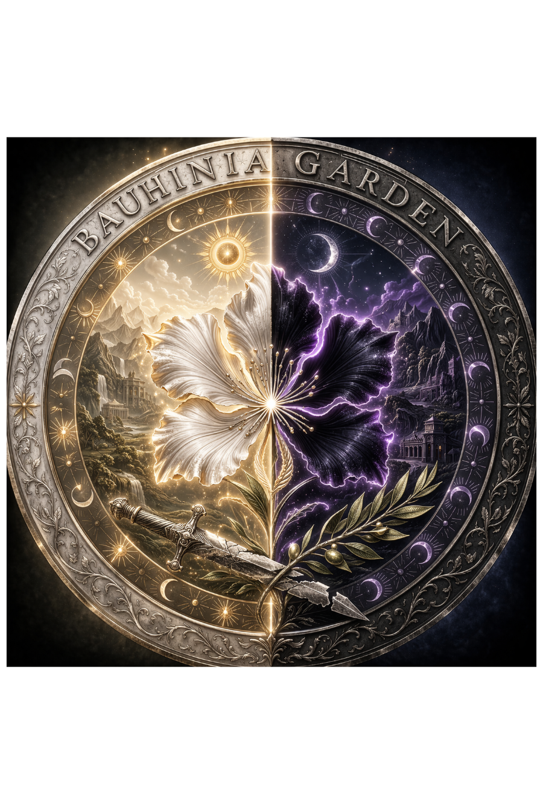
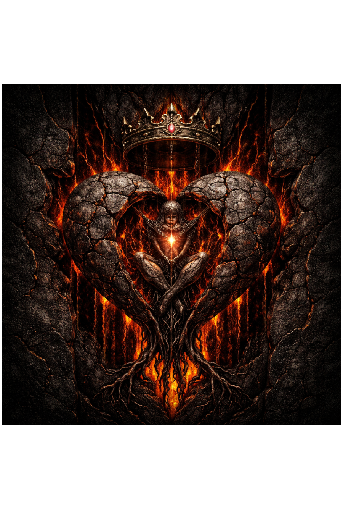

06World & Factions · 势力格局
EC 174年的世界格局
现实世界整体是两面的，就像一块夹心饼干。这一面有三大势力、有天空中的乌托邦、有深海之下的未知文明；另一面有与之完全并行的未知世界（背面世界）。整体世界的正反面存在物理通道：大断崖。
06.1已知世界主要势力

千
千源境
Qianyuan · 仙术帝国
仙术与剑术的帝国，以仙酒为权力核心。天道信仰，仙帝、酿酒坊、仙剑道三方制衡，平衡了近千年。东方王朝权谋美学。
EC 174年内战爆发 · 北方虫族压境 · 两线同时崩溃

月
月轨城
Lunaris · 魔法研究院城市
魔法师建立的研究院城市，靠八塔系统持续监测世界魔力浓度，用写进体制的记录代替会遗忘的人类记忆。「知止者存，逾矩者灭」刻于南城门。
暗渊塔持续深红警报（自EC 160年）· 与极光机枢外交断绝

极
极光机枢
Aurora Machina · 科技财团国家
凝晶科技财团组成的国家，六大财团统治，进步教义取代了所有传统信仰。完全依靠凝晶能源驱动，赛博朋克/蒸汽朋克工业风格。
凝晶矿脉仅剩60-80年 · 人工生命研究触碰平衡禁区

苍
苍穹国
Vaultara · 云上理想国
建于云层以上两万丈的漂浮文明，观测地面已逾一万五千年，至今未被任何地面势力发现。得道成仙的修炼者飞升前往此地，乌托邦社会。
下行派提案：是否接触地面——一万五千年来的第一次争议

暮
暮冬森林
Winterwood · 冰雪族领地
冰雪族与魔法生物栖息地。凛冬巨龙、镜湖、暮冬庆典等奇幻要素。家族长老共治。邻接虫族裂隙，是最近感受到虫族压力的区域。
虫族涌入压力上升 · 巨龙从极北带回无法解读的痕迹

紫
紫荆园
Bauhinia Garden · 光暗共存自治领
日光族（光系）与暮光族（暗系）共存的自治领，也是魔法生物的家园之一。联席会 + 荆约卫中立维和，三百年旧战积怨从未真正消解。
脆弱共存随时可能再次撕裂 · 夕海暗原素密度上升

夜
夜庄园
Nocturna Manor · 夜族领地
夜族的隐蔽魔法领，夜族女王夜绯或许知道海的对岸的存在。与已知世界其余势力保持刻意的距离，是最神秘的势力之一。
女王或知晓「海的对岸」 · 与月蓝残响存在某种未明联系

熔
熔心王国
Pyreheart · 已灭亡 · Extinct
曾位于背面世界大陆核心的奴隶制神权帝国，以活人生息铸造凝晶。其遗物就是两个世界今天赖以为生的凝晶矿脉。已知世界不知道凝晶是人造的。
双方都在消耗同一批遗物 · 都走向同一个能源真空
⚠ EC 174年 · 当前危机
世界树枯萎
暗渊塔持续异常
时间之海失准
虫族压力上升
千源境内战
极光机枢触碰禁区
凝晶矿脉见底
失乐园连接弱化
06.2背面世界与未知区域
背面世界：通过凝晶高原大裂谷与已知世界相连，两侧互不知晓对方存在。熔心王国（已灭亡）以活人生息铸造凝晶的奴隶制神权帝国，其遗物就是两个世界今天赖以为生的凝晶矿脉。已知世界不知道凝晶是人造的，背面世界知道来源但复原不了技术，双方都在消耗同一批遗物，都走向同一个能源真空。
未知区域：深海之下·裂谷以西·森林以北·海的对岸。共享同一套能量底层，与世界平衡存在潜在关联。目前尚无任何势力能够系统性探索这些区域。